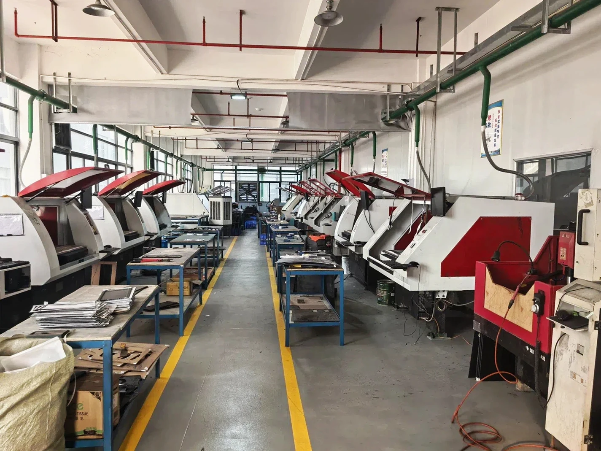

Frame and center plates
Top plates, bottom plates, center plates and equipment panels with drawing-defined contours, holes, slots and mounting patterns.
Factory-direct UAV component manufacturing
Aero Carbon Tech manufactures carbon fiber sheets and CNC-machined UAV structural components from prototype review through batch production.
Send the current drawing, quantity and application context so material, machining, surface, inspection and production requirements can be reviewed together.

Finished components are reviewed against the controlled drawing and the interfaces that matter to the complete aircraft assembly.
Top plates, bottom plates, center plates and equipment panels with drawing-defined contours, holes, slots and mounting patterns.
Flat or tubular arm components reviewed around geometry, interfaces, construction, length and assembly requirements.
Battery plates, payload supports, sensor mounts and camera or inspection-equipment brackets made to the current drawing.
Mounting plates, brackets and other finished carbon fiber parts for customer-designed UAV platforms and assemblies.
Component suitability, aircraft performance and final validation remain project-specific. No airworthiness or performance certification is implied.
The manufacturing route connects the core sheet and plate supply with drawing-based CNC machining and controlled batch delivery.
Confirm thickness, construction, viewing face, surface and quantity for the component requirement.
Review dimensions, datums, contours, interfaces, critical features and the controlling revision.
Evaluate cutting, drilling, slots, cut-outs, edge work and other drawing-defined flat-part features.
Review agreed surfaces, edges, dimensions, hole relationships, appearance and requested records.
Carry the approved drawing revision, inspection priorities, identification and packaging into recurring orders.
Available combinations are confirmed for the drawing rather than presented as universal stock or performance specifications.
The same Huizhou production base shown on the homepage supports sheet preparation, CNC work, finishing, inspection and OEM order coordination.



The June 2026 V-Trust audit records a 5007.95 sqm building area, 35 CNC units and in-house cutting, molding, grinding, CNC and spraying processes.
The audit records 9 quality staff, including IPQC and OQC roles. Project inspection remains aligned with the drawing and agreed order requirements.
Prototype feedback, approved references and controlled revisions can be carried into batch-production preparation and delivery coordination.
Middle East buyers can use the same factory-direct drawing review, qualification and export coordination path available to global OEM customers.
Factory visits and available audit documentation can support supplier review before sample or production approval.
Share drawings, quantities, inspection expectations, destination and target timing through email, RFQ or WhatsApp.
Packaging, courier, air or sea shipment and freight-forwarder handover are confirmed for the specific order.
These questions focus on drawing-based UAV component review rather than generic material selection.
Frame plates, top and bottom plates, arms, battery plates, payload mounts, equipment panels and other drawing-defined structural parts can be reviewed.
Identify units, finished thickness, datums, contours, holes, slots, interfaces, critical dimensions, visible faces, quantity and revision status.
A prototype stage can be discussed so the buyer can validate dimensions, assembly fit, appearance and project-specific function before recurring production is prepared.
The approved drawing revision, confirmed material and surface assumptions, inspection priorities, quantity, identification and packaging should be recorded for each recurring order.
Yes. Use the domain email below and reference the same company and project name in the RFQ form so the inquiry and drawing can be matched.
Share the drawing revision, material or thickness expectation, prototype and batch quantities, inspection needs and destination.
UAV component RFQ
Send drawings by email and submit the project, quantity and destination here for factory review.